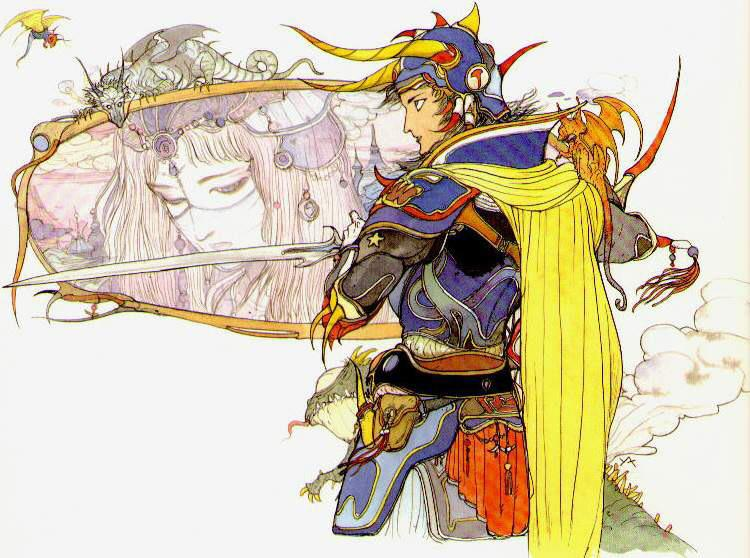
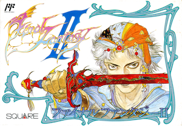
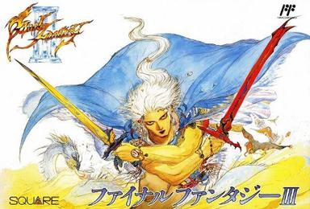

The game that saved Square from bankruptcy and launched one of gaming’s most influential franchises.

The origins of the Final Fantasy legacy
The game that saved Square from bankruptcy and launched one of gaming’s most influential franchises.

Introduced narrative‑driven storytelling and a unique leveling system based on action usage.

FFIII introduced the fully‑fleshed Job System, which became a defining mechanic for the series.
